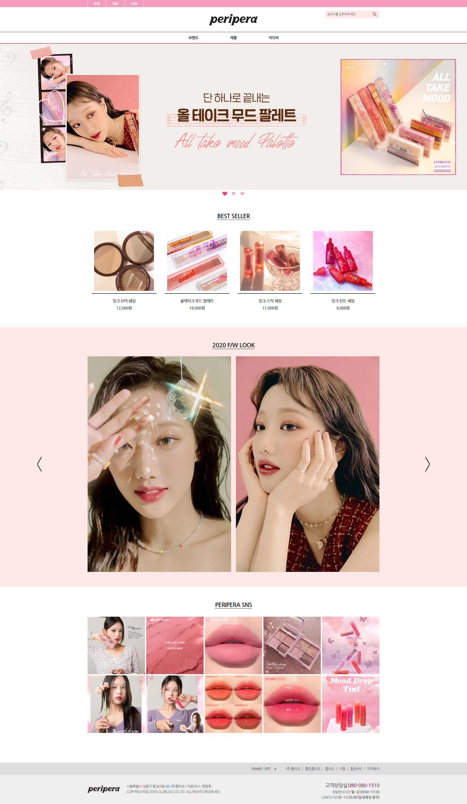
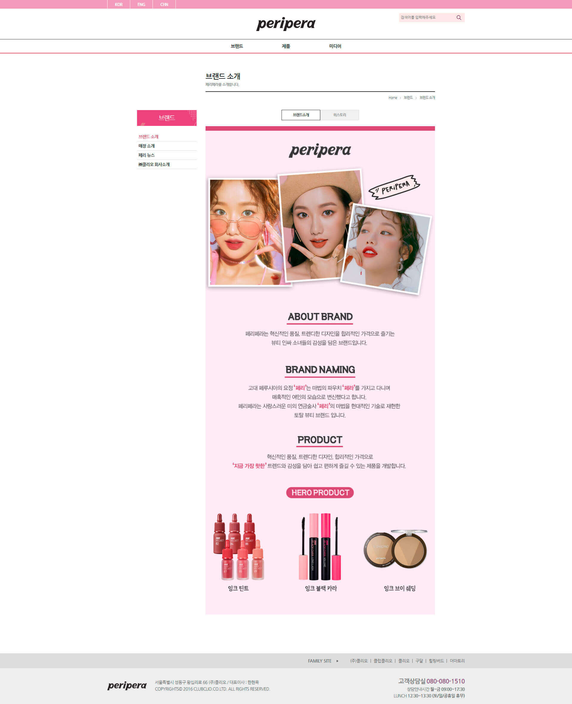
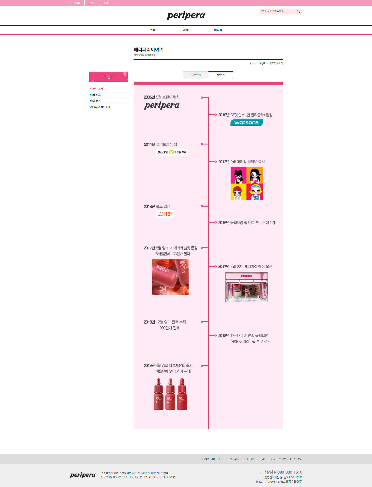

PROJECT
Peripera
PC
WEBSITE
01
MAIN PAGE
- 2개의 Slide가 들어간 PC 사이트입니다
- Main Slide Section을 제외한 모든 Section에는 Parallax scrolling 효과를 주었습니다
- Menu가 열릴 때 Quick menu가 가려지지 않고 Menu의 높이만큼 내려오도록 구현하였습니다
- BEST SELLER section과 F/W LOOK Slide section에서는 이미지를 두장씩 앞뒤로 배치하여 hover시 이미지가 자연스럽게 바뀌도록 구현하였습니다
- SNS section에서는 SNS 이미지를 click시 Modal이 열리도록 구현하였습니다
FULL PAGE 👀
02
SUB PAGE
- BRAND
- Menu가 열릴 때 Quick menu가 가려지지 않고 Menu의 높이만큼 내려오도록 구현하였습니다
- Navigation bar에서는 addClass로 현재 페이지 위치를 나타냈습니다
FULL PAGE 👀
03
SUB PAGE
- HISTORY
- Menu가 열릴 때 Quick menu가 가려지지 않고 Menu의 높이만큼 내려오도록 구현하였습니다
- Navigation bar에서는 addClass로 현재 페이지 위치를 나타냈습니다
FULL PAGE 👀
04
SUB PAGE
- NEW PRODUCT
- Menu가 열릴 때 Quick menu가 가려지지 않고 Menu의 높이만큼 내려오도록 구현하였습니다
- Navigation bar에서는 addClass로 현재 페이지 위치를 나타냈습니다